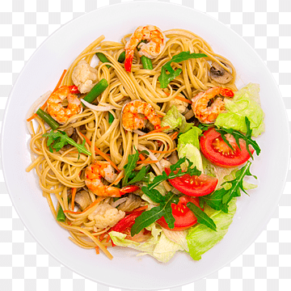

Chowmein

Chowmein Recipe
Description:
Chowmein is a popular Chinese dish made with stir-fried noodles and vegetables.
Ingredients:
- 1 pack of chowmein noodles
- 1 onion, sliced
- 1 bell pepper, sliced
- 1 carrot, sliced
- 1 cup of cabbage, sliced
- 2 cloves of garlic, minced
- 2 tablespoons of soy sauce
- 1 tablespoon of oyster sauce
- 1 tablespoon of vegetable oil
Instructions:
- Cook the chowmein noodles according to the package instructions, then drain and set aside.
- Heat the vegetable oil in a large skillet or wok over medium-high heat.
- Add the garlic and stir-fry for 30 seconds, until fragrant.
- Add the onion, bell pepper, carrot, and cabbage, and stir-fry for 3-4 minutes, until the vegetables are tender-crisp.
- Add the cooked noodles to the skillet, along with the soy sauce and oyster sauce.
- Toss everything together and cook for an additional 2-3 minutes, until the noodles are heated through and coated in the sauce.
- Serve hot and enjoy!